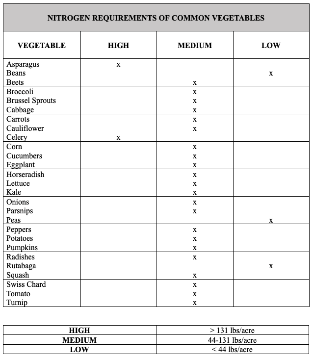

| Nutrient Cycle | Is Mineral Weathering a Factor? (Yes/No) | Is Soil Organic Matter a Factor? (Yes/No) | What is the Plant Available Form? |
| N | |||
| P | |||
| K |
12 Soil Management: Chemical
Objectives
- Understand factors that affect nutrient management
- Learn how to read a soil test report
- Determine the best nutrient source to meet soil test nutrient recommendations
- Observe the impact of lime and acid on high and low base saturation soils
- Interact with personal soil samples to determine general idea of nitrate and pH levels
Key Words & Concepts
- Nutrient management
- Soil testing
- Fertilizer grade
12.1 PRE-LAB PREP
Collect approximately 1 cup of soil from a garden or farm. Make sure to sample only to a 0-3 inch depth. Optional: Determine the texture of your soil sample using the ribbon method and record it in this week’s texture contest.
12.2 INVESTIGATION A: Macronutrient Cycles
For this investigation, we will consider N-P-K, three essential plant macronutrients. You may recognize these letters from bags of fertilizer in the hardware store or garden centers. We have gone over the Nitrogen cycle in detail as Nitrogen is ubiquitously the most limiting nutrient for plant growth. Phosphorus and Potassium undergo their own cycles which are unique processes. The following exercise will provide an opportunity to understand the characteristics and movement of these three major macronutrients.
Fill in the following information pertaining to the nutrient cycles.
- The plant available form of phosphorus PO43- is an anion, yet phosphorus is not generally susceptible to leaching, unlike nitrogen. Why?
- How is potassium (K) availability controlled by mineral weathering?
- In Minnesota, what is the best time to soil test for an accurate understanding of plant available nitrogen (N)?
12.3 INVESTIGATION B: Measuring Soil pH and Nitrate Levels with Test Strips
Below are instructions for prepping two different set ups for soil analysis using pH and nitrate strips. Preparing them in advance will be helpful to you as they need 10 mins before reading. We are using test strips in the lab to provide a rapid indication of the pH and nitrate in your soil sample. However, note that for making detailed decisions regarding soil management and plant growth, you would want a more accurate, laboratory measurement of pH and nitrate.
Soil pH
Locate your soil (check-in with TA on duty to provide your sample to you), 50 ml tube, DI water, pH strips.
Fill the 50 ml tube with 10 ml of your soil.
Saturate the soil with DI water and fill up to the 20 mL line. This makes a 1:1 ratio of soil/water.
Shake vigorously for roughly 30 sec and let sit for 10 mins.
When ready to read, take a pH strip and dip into the tube. Try not to dip directly in the soil.
The pH paper will react; line it up with the color chart to what closely matches the strip. Record your result.
Nitrate
Locate your soil (soil from same sample as for your pH reading), filter paper, funnel, catch receptacle, DI water, nitrate strip.
Fold the filter paper into a cone shape. You can do this by folding it in half and then in half once more (making it into a quarter). Open the filter up to make a cone shape and place it in a funnel.
Pre wet the paper by squirting DI water around it. It doesn’t need to be saturated but wetting it will help the filtering go faster.
Put a scoop of your soil (approximately one spoonful/scoop) into the filter and add water to the top of the filter line. It is very important that no soil overflows into the catch. It will make reading your result difficult.
Allow to sit for ~10 mins.
Use the bottom square of the nitrate strip to read result. It is very important that no soil gets on the strip, as you will not be able to see the color otherwise. Dip the strip into the clear liquid, wait 30 sec and record the range.
Estimated Nitrate-Nitrogen (NO3 – N) in lbs /acre formula below.
Note that “NO3 – N” does not mean subtract a value for N from a value for NO3; it just refers to the form of nitrogen, which is nitrate. It is pronounced as “nitrate nitrogen” and is one value - the value given by the test strip.
Assume a bulk density of 1. Refer to the Pre-Lab Prep for depth.
\[ NO\ {3}-N\ (lbs/ac) = \frac{(ppm\ extract\ NO_{3}-N)\ *\ (depth\ of\ soil\ sampled\ in\ cm)\ *\ (bulk\ density)\ *\ 0.89}{10} \]
| Approximate Soil pH | Approximate Soil Nitrate (ppm) | Approximate Soil Nitrate (lbs/acre) |
12.4 INVESTIGATION C: Soil pH and Nutrient Availability
Recall that soil pH has a profound impact on plant uptake of nutrients. Soils which are too acidic and too basic will result in difficulty accessing certain nutrients for plants. Use the nutrient availability diagram to identify ideal pH ranges for each plant nutrient.
| Nutrient | pH Range Most Available | pH Range Least Available |
| N | ||
| P | ||
| K | ||
| S | ||
| Fe | ||
| Ca |
What are your thoughts on potential issues or nonissues with plant growth in your soil after measuring your soil’s pH?
Using your soil’s nitrate result from investigation B, what is a plant you could grow without needing to add any more Nitrogen? Use the table below.

12.5 INVESTIGATION D: Liming and Base Saturation
In the field, quick lime or elemental sulfur is used to adjust pH to a desired range. The following investigation demonstrates a soil with low base saturation (Low B.S.) and a soil with high base saturation (High B.S.) combined with two different amendments. The diagram shows six variations of soil + solution and the pH for each sample. We used HCl in place of elemental sulfur. Before recoding the diagram provided in lab, answer the following questions.
How do you think the quick lime will impact the Low B.S. sample?
How will the addition of acid affect the pH in soil with High B.S.?
Record the pH of each solution here.
| Type of Solution | pH |
| Low Base Saturation Soil Slurry | |
| Low Base Saturation and 1 scoop Lime | |
| Low Base Saturation and 10 scoops Lime | |
| High Base Saturation Soil Slurry | |
| High Base Saturation and 1 mL of 5% Acid | |
| High Base Saturation and 5 mL of 10% Acid |
Explain the impact on the pH of each soil after the different solutions were added. Did the results surprise you?
12.6 INVESTIGATION E: Observation of Plant Nutrient Deficiencies
Nutrient deficiencies in plants can sometimes have complex causes and symptoms, and can also be related to drought and other types of stress. Just having a sufficient total amount of an element in the soil does not always eliminate deficiencies because plant nutrient uptake is dependent on a wide range of factors including nutrient form, mobility, and soil properties such as pH, mineralogy, and organic matter. Nutrient deficiencies can be outwardly manifested in different ways in different plant species, and the symptoms of some nutrient deficiencies can mimic other forms of stress. However, experts with enough experience can diagnose nutrient deficiencies in the field. In this investigation, you will examine the outward effect of N, P and K deficiencies in corn. Note that symptoms in other plant species may look similar or may vary, depending on biology and growth conditions.
Observe and read through examples of nutrient deficiencies in corn. Then, look at the unknown corn plants with nutrient deficiencies and determine which particular nutrient is most likely deficient in each case.
| Unknown Plant | Suspected Nutrient Deficiency |
| 1 | |
| 2 | |
| 3 |
12.7 INVESTIGATION F: Common Fertilizer Materials
Inorganic Fertilizers
Plant roots absorb the majority of their nutrients from the soil solution as simple, inorganic ions (charged atoms or molecules). Larger molecules can also be absorbed, but their rate of absorption is slow. Most inorganic fertilizers dissolve readily in water and are immediately available to plants for uptake. When used according to recommendations, these types of fertilizers efficiently supply the required nutrients for plant growth and are safe for the environment. However, excessive rates can injure plant roots due to high salts and potentially lead to environmental degradation.
Review the inorganic fertilizers and complete the following table.
| Name of Inorganic Fertilizer | Analysis (Grade) |
| Ammonium nitrate | |
| Urea | |
| Triple super phosphate | |
| Monoammonium phosphate | |
| Diammonium phosphate | |
| Potassium chloride |
Organic Fertilizers
Organic fertilizers are comprised of a diverse mixture of organic molecules and usually contain more complex chemical substances that take time to be broken down into forms usable by plants. These are usually considered slow-release type fertilizers, compared to the quick-release characteristics of most inorganic fertilizers. It is important to apply these organic fertilizers well before periods of rapid plant growth. Organic fertilizers usually have a low salt index, so larger amounts can be applied at one time without causing injury to plant roots. With organic nitrogen sources (except urea), one application can be made without having to be concerned about losing most of the nitrogen to leaching. However, even organic fertilizers applied at excessive rates can cause environmental degradation due to nitrate leaching or runoff of soluble organic compounds. The cost of organic fertilizers at garden centers on a per-pound of nutrient basis is usually higher than quick-release inorganic fertilizers. Manure, compost, and many other materials used as organic fertilizers add considerable quantities of organic matter to the soil. Organic matter can increase soil drainage, aeration, water holding capacity, and the ability of the soil to hold nutrients. The beneficial effects of organic matter on soil structure can have a greater effect on plant growth than the fertilizer value of some of these organic materials. Most organic fertilizers also provide a variety of macronutrients (besides NPK) as well as many micronutrients.
| Name of Organic Fertilizer | Typical Analysis (Grade)- can be variable! |
| Dairy cattle manure | 2-0-2 |
| Sheep Manure | 2-1-2 |
| Poultry manure | 4-3-2 |
| Seaweed | 0-0-1 |
| Fish meal | 10-6-0 |
| Sewage sludge | 2-3-0 |
| Bone meal | 1-12-0 |
| Milorganite | 6-3-0 |
Complete the table below. For each situation described, decide which form of fertilizer would be preferred, inorganic or organic. Make an X in the appropriate box.
| Situation | Preferred form: Inorganic | Preferred form: Organic |
| Need to make nutrients quickly available to plants | ||
| Desire to minimize fertilizer cost | ||
| Concerned about increasing the salt content in the soil | ||
| Need to improve soil structure | ||
| Minimize nitrate leaching into groundwater | ||
| Want to provide only one or two nutrients per application |
12.8 INVESTIGATION G: Reading and Using a Soil Test Report
Soil testing is a useful nutrient management tool. If used in a predictive mode, a soil test can reduce the environmental risks from the addition of nutrients to the soil while optimizing plant growth. There are two soil reports from the soil we observed in the field last week on the bench. One has soil test results and recommendations for a lawn and garden, while the other report is for future farm and field planting. Fill in the following table of each soil test. Note that recommendations are in P2O5 and K2O, so there is no need to convert. Use the farm and field report to make a recommendation for planting corn or grain.
| Question | Lawn & Garden Report | Farm & Field Report |
| What is the pH of the soil? | ||
| What is the estimated soil texture? | ||
| Was the soil test for P Bray or Olsen? | ||
| Why was that particular method chosen? (see lecture 4-4 slide 7) | ||
| What is the K soil test result? (ppm) | ||
| What is the nitrogen (N) recommendation? | lb N/1000 sq ft | lb N/acre |
| What is the phosphate (P) recommendation? | lb P2O5 /1000 sq ft | lb P2O5/acre |
| What is the potash (K) recommendation? | lb K2O/1000 sq ft | lb K2O/acre |